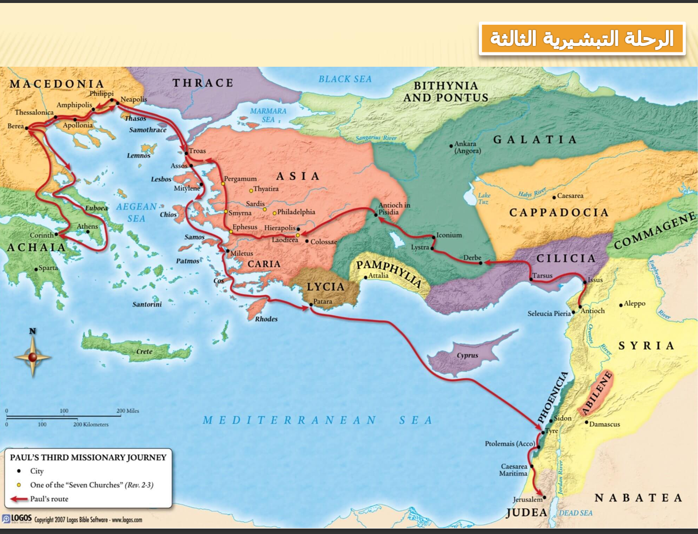

الرحلة التبشيرية الثالثة
غرضها التركيز على أفسس وتثبيت الكنائس
غرضها التركيز على أفسس وتثبيت الكنائس
الرحلة دي كانت رحلة "تثبيت وتوديع". بولس بدأها وهو ناوي يمر على كل الناس اللي عرفهم قبل كدا عشان يطمن عليهم ويقويهم في إيمانهم. قضى معظم وقت الرحلة دي في مدينة واحدة كبيرة (قعد فيها 3 سنين)، وكان شغال فيها بقوة لدرجة إن ناس كتير سابت عبادة الأصنام، وده خلى صناع التماثيل يثوروا عليه لأن رزقهم وقف، وعملوا لمه كبيرة وشغب ضده. وفي الرحلة دي، بولس كان "ماكينة كتابة"، كتب أهم رسايله اللي بنقرأها لحد النهاردة عشان يحل مشاكل الكنائس ويشرح ليهم أسرار الإيمان. وهو راجع، كان عارف بالروح القدس إن دي آخر مرة هيشوف فيها أصحابه وتلاميذه، فكانت المقابلات كلها دموع ووداع مؤثر. وفي واحدة من اجتماعاته، طول في الوعظ جداً لدرجة إن شاب كان قاعد في الشباك غلبه النوم ووقع ومات، وبولس أقامه بمعجزة. ورغم إن الكل كان بيعيط وبيرجوه ميكملش طريقه لأنهم عارفين إنه هيتقبض عليه، هو كان قلبه جامد جداً ومصمم يكمل رسالته للآخر، وبالفعل انتهت الرحلة بإن تم القبض عليه أول ما وصل وجهته الأخيرة.

"الرحلة التبشيرية التالتة" لبولس الرسول، وهي رحلة طويلة أخدت كذا سنة ولف فيها بلاد كتير في حوض البحر المتوسط. خليني أشرحلك الخط اللي باللون الأحمر ده مشي إزاي ببساطة: البداية كانت من أنطاكية (تحت على اليمين)، وطلع منها برياً وعدى على منطقة غلاطية وفريجية عشان يطمن على المؤمنين هناك. بعد كده كمل لحد ما وصل لمدينة أفسس (اللي في آسيا الصغرى)، ودي كانت محطة مهمة جداً قعد فيها حوالي ٣ سنين، وهي باينة في نص الخريطة عند التجمعات السكنية الكتير. بعد أفسس، طلع بالمركب وعدى على ترواس ومنها لبلاد اليونان فوق (مقدونية وأخائية)، وزار مدن مشهورة زي فيليبي وتسالونيكي ونزل لحد أثينا وكورنثوس. وهو راجع، مخدش نفس الطريق بالظبط؛ عدى تاني على مقدونية، وبعدين ركب مركب من ترواس وفضل نازل بمحاذاة الساحل، وعدى على جزر ومدن زي ميتيليني وساموس وميليتس (اللي ودّع فيها قسوس أفسس). آخر جزء في الرحلة كان بحري بامتياز، المركب مشي من باتارا وقطع البحر المتوسط كله لحد ما وصل لـ صور وعكا (بتولمايس)، وفي الآخر الرحلة انتهت في أورشليم (القدس)، ودي كانت القفلة بتاعة المشوار الطويل ده.
لعبه صغيره عشان المعلومه تثبت بس قبل ما تدخل قول يارب تشتغل عشان مش بعرف اعمل العاب بامانه مكدبش عليك يعني
ابدأ اللعبة الآن 🎮